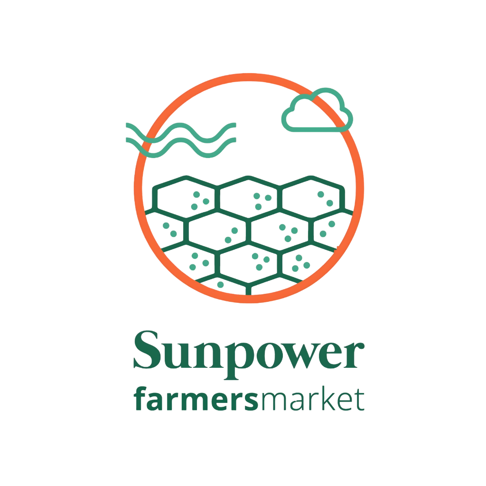
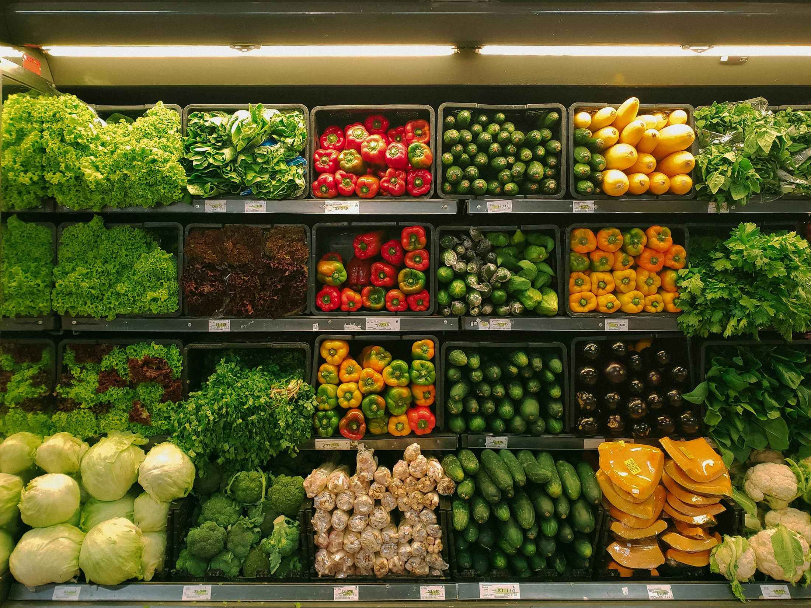

01 / GALLE↗
Dewata
Sunpower Farmers Market
470/B, Matara Road,
Dewata, Galle.

SunpowerFARMERS MARKETYour list 0
Everyday essentials. Thoughtful discoveries.
A fresh perspective on your everyday shop.
01 / THE SUNPOWER WAY
From a nourishing breakfast to something new for the pantry, there’s joy in choosing well. Discover food and natural products from local makers and selected brands, with Sunpower on the southern coast.
02 / EXPLORE THE MARKET
A few favourites to start with.
Ask our team about today’s availability.
Food photography is illustrative. Product range and availability vary by store.
03 / ROOTED IN THE SOUTH
Sunpower brings food, natural products and everyday discoveries together in Dewata, Galle Fort and Ahangama. A place to pick up a favourite—and leave with a new one.
Our selections include products from brands such as Miss NuTri, Nourish, Momiji Natural and Ceylon Coconut Company. Ask in-store for the latest arrivals.
04 / YOUR LOCAL SUNPOWER
Drop in, explore, take something good home.
Contact the team to check opening hours.
Sunpower Farmers Market
470/B, Matara Road,
Dewata, Galle.
Sunpower Farmers Market
10, Leyn Baan Street,
Galle Fort.
Sunpower Super
91, Matara Road,
Ahangama.
Check a product. Discover what’s new.
Our next conversation starts here.
A FEW USEFUL THINGS
Message us on WhatsApp with the product name and your preferred store. Our team can confirm current availability and prices.
This website is a guide to our market. Send your shopping inquiry on WhatsApp; the team will confirm availability, prices and any collection or delivery arrangements. No payment is taken here.
Follow Sunpower on Facebook or Instagram for updates, or contact a store.